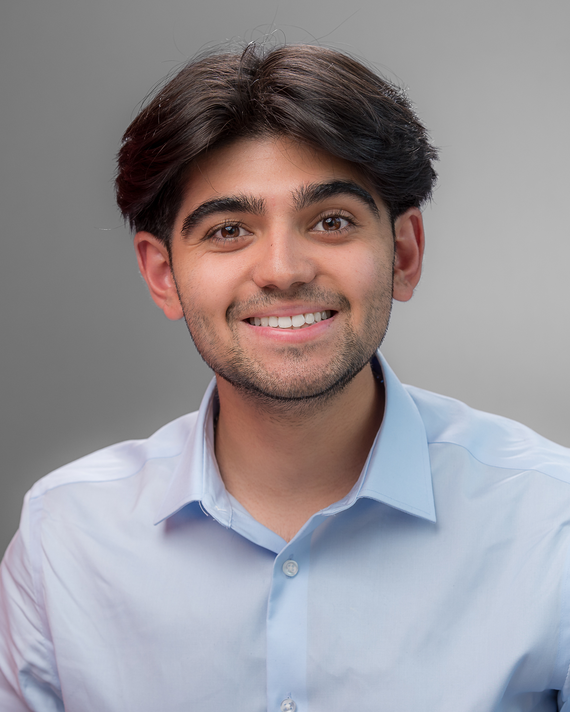

Computer Science & Statistics · NC State University
I'm a third-year student exploring the intersection of neuroscience and technology. My work focuses on developing neural interfaces that can meaningfully improve lives, particularly for those with disabilities. I believe technology should serve humanity's highest aspirations.

Achievements
Class of 2027
Selected from among 300 applicants for NC State's oldest and most prestigious undergraduate scholarship and leadership development program. A four-year commitment to servant leadership, personal growth, and community impact.
Neurotech @ NC State
Created and lead a student organization developing assistive neurotechnology devices for children at Hilltop Home, applying principles of neural interfaces to improve the lives of disabled individuals.
Meitzen Lab
Conducting undergraduate research under Dr. Meitzen, exploring the intersection of neuroscience, behavior, and computational methods to advance our understanding of neural systems.
Focus Areas
I'm drawn to the profound question of how we can create meaningful connections between the human nervous system and technology. Neural interfaces represent one of the most promising frontiers for improving quality of life.
My approach combines rigorous statistical methodology with practical computer science applications, always grounded in the goal of human benefit. I believe the best technology emerges when technical excellence meets genuine empathy for those it serves.
Developing brain-computer interfaces that can translate neural signals into actionable outputs for assistive technology applications.
Applying statistical and machine learning methods to understand patterns in neural data and improve signal processing.
Creating practical devices that leverage neuroscience principles to help individuals with disabilities live more independent lives.
Selected Work
Designing and developing assistive technology devices for children with disabilities at Hilltop Home, applying EEG-based signal processing to create intuitive control interfaces.
Founded and lead a student organization bringing together engineers, neuroscientists, and designers to explore the potential of brain-computer interfaces for social good.
Undergraduate research applying computational methods to analyze neural data, developing statistical frameworks for understanding patterns in brain activity.
Participating in service-learning initiatives through the Caldwell Fellows program, including community outreach and STEM education for underserved populations.
Philosophy
"To me, leadership and service have never felt like interests as much as integral parts of life that I happen to enjoy."
Leading by putting others first and creating opportunities for collective growth.
Building solutions that genuinely improve human lives, not technology for its own sake.
Pursuing excellence through honest inquiry and principled reflection.